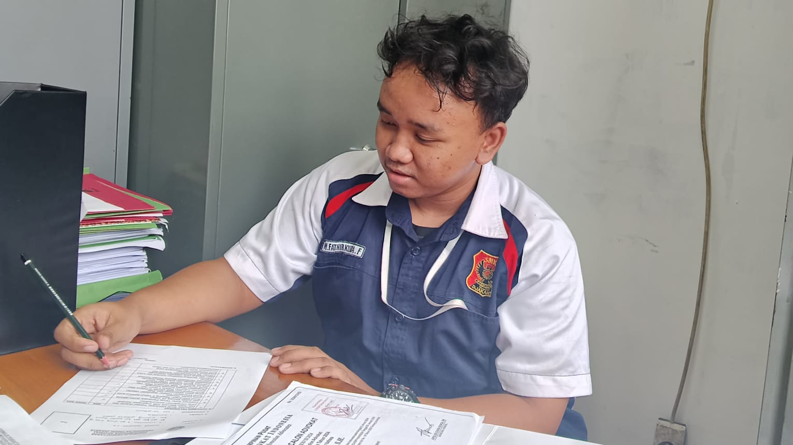
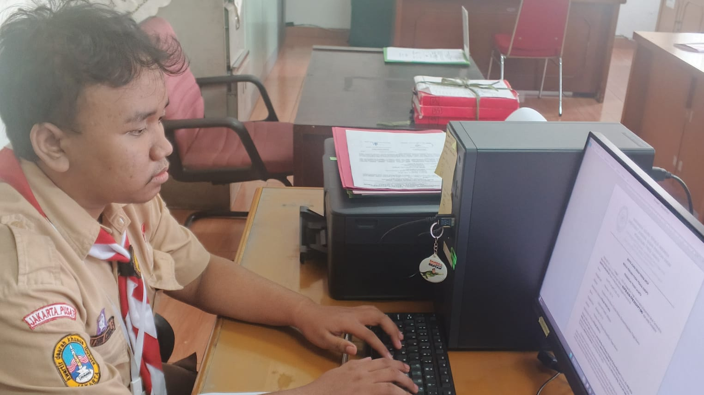

Tentang Saya

Saya adalah lulusan SMK jurusan Teknik Komputer dan Jaringan (TKJ) dengan pengetahuan dasar jaringan, perangkat keras, dan sistem operasi. Memiliki semangat belajar tinggi serta mampu bekerja sama dalam tim.
Pendidikan
SMKS Poncol Jakarta Pusat
Jurusan Teknik Komputer dan Jaringan (TKJ)
Lulus tahun 2026 dengan peminatan pada jaringan komputer dan sistem operasi.
Sertifikat
- Sertifikat Praktik Kerja Lapangan – Pengadilan Tinggi Jakarta
- Pusat Pelatihan Dan Pengembangan Pendidikan – Jakarta Pusat
Pelatihan yang Pernah Diikuti
- Pusat Pelatihan Dan Pengembangan Pendidikan – 2025
- Praktik Kerja Lapangan Pengadilan Tinggi – 2025
Proyek
Mendata Surat Semua Pengadilan

Kegiatan pendataan seluruh surat pengadilan disusun untuk memastikan setiap surat tercatat dengan rapi dan akurat. Pendataan ini mencakup pengelompokan surat masuk dan surat keluar berdasarkan jenis, tanggal, dan tujuan. Proses ini membantu menjaga keteraturan administrasi dan memudahkan pencarian arsip saat dibutuhkan.
Membuat Surat Untuk Hakim

Kegiatan membuat surat untuk hakim bertujuan melatih kemampuan menyusun surat resmi sesuai kaidah administrasi pengadilan. Proses ini mencakup penentuan format, penggunaan bahasa yang jelas, serta penulisan isi surat yang tepat sasaran. Setiap bagian surat disusun agar informasi tersampaikan dengan benar dan tidak menimbulkan penafsiran ganda.